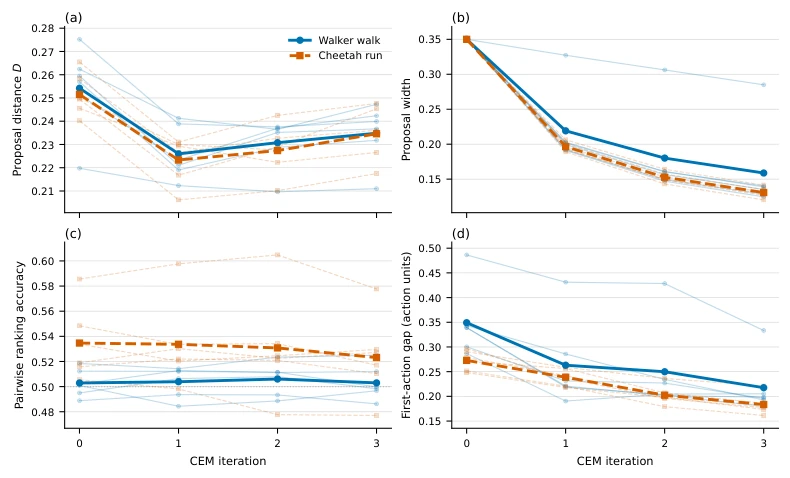
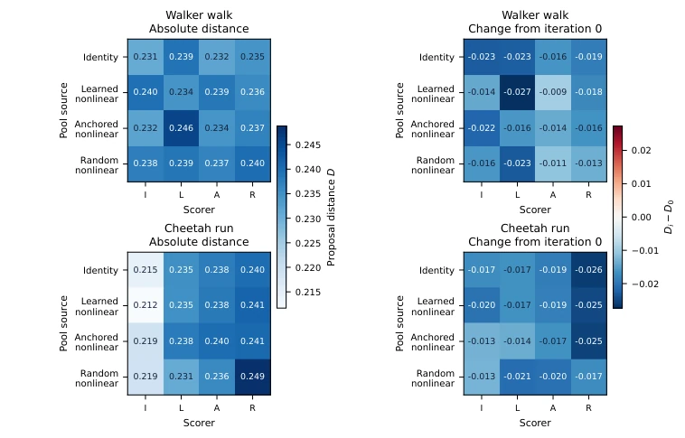
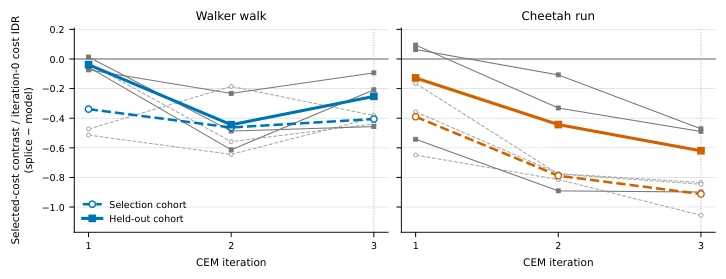
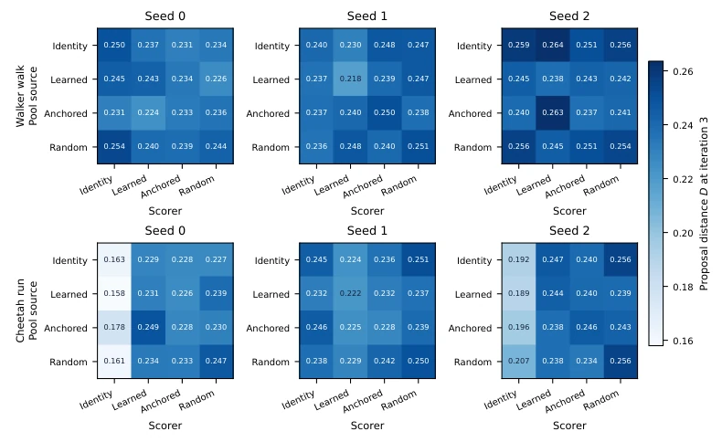
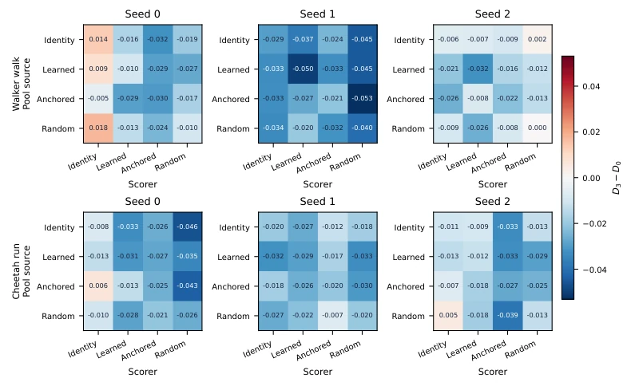
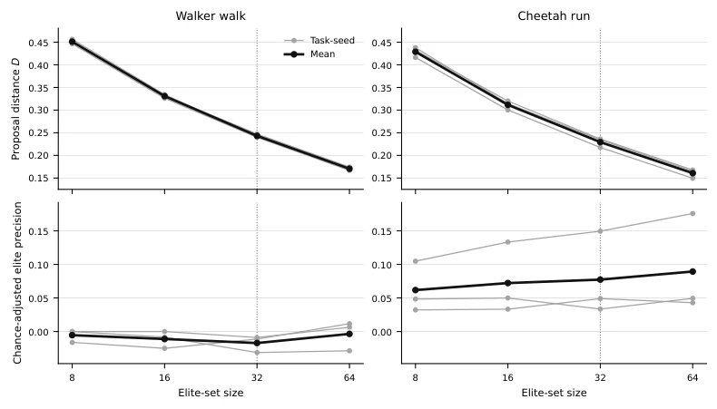
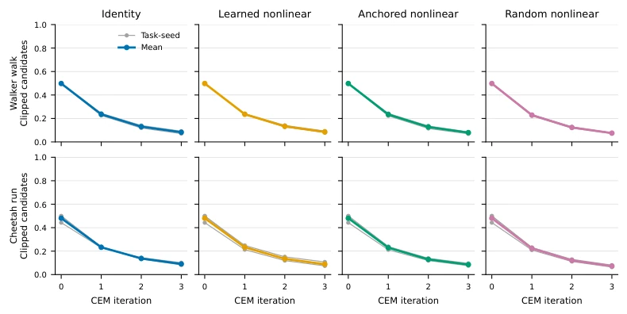
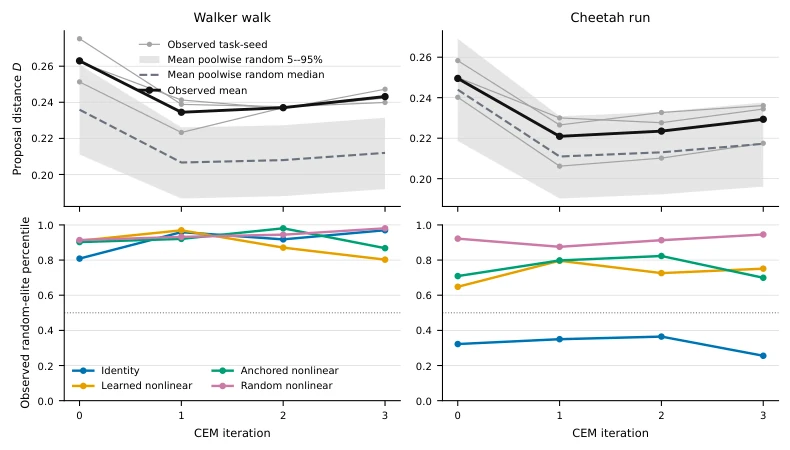

这篇论文把 CEM 里的世界模型拆成了“裁判”和“教练”两个角色，挺有意思。裁判打分决定选谁，教练根据选出的精英调整下一轮采样分布。作者发现，模型打分错了，不仅当下选错，还带偏了未来的搜索方向。实验上搞了个“交叉审计”，让不同模型互评同一批候选，挺硬核。但最扎心的是，那个“一次更新缝合”干预，虽然真能降低最终成本，但这得靠环境真实执行所有候选来算分，部署时哪来的上帝视角？这更像是个诊断工具，而不是能直接用的规划器。不过，能在 Walker 和 Cheetah 上复现这种“环境精英集优于模型精英集”的现象，说明很多基于模型的规划器可能一直在错误的分布里打转，浪费了计算资源。
—
研究动机Motivation
在基于模型的规划中，世界模型通常被视为预测工具，但在 CEM 框架下，它同时决定了候选序列的排序和下一轮采样的分布 [Bharadhwaj et al., 2020]。评分误差不仅影响当前决策，还会通过拟合新的 proposal 分布污染后续搜索，这种“规划诱导的查询偏移”常被忽视。现有评估多关注单步预测精度或下游价值函数 [Farahmand et al., 2017; Grimm et al., 2020]，或仅比较模型与环境的排名一致性 [Wang et al., 2026]。Yu et al. [2026] 虽提出干预性评估，但未区分生成池与评分器的独立影响。本文旨在解决如何量化世界模型在 CEM 迭代中“误导搜索方向”的具体贡献，而非仅仅看最终结果，填补了模型在规划循环中动态影响的评估空白。
—
方法Method
整体流程分为审计与干预两部分。首先构建四个不同架构的代理模型（Surrogates），基于冻结的 Dreamer 上下文 [Hafner et al., 2020] 预测未来状态。交叉审计阶段，每个代理生成候选池，所有代理再对这些池进行交叉评分，形成 4x4 矩阵，分离“生成器”与“评分器”的影响。距离指标 D 包含均值分离和宽度比率，用于衡量 proposal 拟合的差异。干预阶段采用“一次更新缝合”：在 CEM 第 0 次迭代后分叉，分支 M 用模型精英集拟合 proposal，分支 E 用环境真实成本排序的精英集拟合，后续迭代共用原评分器和随机样本。最终比较分支 E 与 M 在第 3 次迭代后的选定序列成本。此设计强制隔离了首次精英决策对后续搜索路径的因果影响，无需额外模拟执行后续候选，且通过匹配随机样本消除了蒙特卡洛噪声。
—

Figure 2: Diagonal audit measurements over four CEM iterations. Thin lines show six task-seed units per task after averaging the four surrogates; heavy lines show task means. The model bank, candidate count, elite cut, and horizon are fixed. From iteration zero to three, D and the raw first-action gap decrease with proposal width. Pairwise order agreement stays near chance on Walker and declines on Cheetah. The dotted line in (c) marks chance agreement.
实验Experiments
实验在 DeepMind Control Suite 的 Walker 和 Cheetah 上进行，共 12 个任务种子，每个含独立训练的 Dreamer 骨干。指标包括提案距离 D、精英精度、成对排名一致性。结果显示，随着迭代进行，提案距离 D 下降，但均值分离度反而增加，宽度收缩掩盖了实际决策偏差。交叉审计发现 Cheetah 上评分器差异主导了距离变化。关键发现是，将首次精英集替换为环境真实排序后，所有 12 个种子（含 6 个保留集）的最终选定序列成本均显著降低。这表明模型生成的精英集质量不足，且错误拟合会累积。但干预依赖环境真实成本，属离线诊断，无法直接用于在线部署，需进一步研究无 oracle 的修正方法。
—

Figure 3: Final-iteration crossed proposal distance, averaged over six seeds per task. The attribution percentages instead average the six within-seed decompositions described in Section 4. A row fixes the surrogate that generated a pool; each column rescores that executed pool with Identity, Learned nonlinear, Anchored nonlinear, or Random nonlinear. The right panels subtract each scorer’s value on the common initial pool. Cheetah has greater variation between scorers than between pool sources in all six seeds. Walker divides variation across pool source, scorer, and pairing.

Figure 4: Effect of replacing the first Random nonlinear elite set on selected cost over iterations one to three. Both branches share the initial pool, later scorer, and base random samples; only the first elite set differs. Environment-elite minus model contrasts are scaled by the initial pool’s realised-cost interdecile range. Dashed circles show selection units, solid squares show held-out units, and lines show cohort means. Every final contrast is negative, including all six held-out units; intermediate contrasts can be positive. Table 5 reports all 12 task-seed trajectories.

Figure 5: Final-iteration crossed proposal distance for the six seed 0–2 gate units. A row fixes the generator pool and columns rescore its executed candidates; candidate sets are never pooled across seeds. Cheetah is scorer-dominated in all three gate units. Identity has the lowest column mean in seeds 0 and 2; Learned nonlinear has the lowest in seed 1.
其他图片Other Figures

Figure 6: Change in crossed proposal distance for the six gate units. Each cell holds its scorer fixed and subtracts that scorer’s value on the common iteration-zero pool. Most cells are negative at iteration three. This comparison records the ratio-based distance D and does not determine candidate order agreement.

Figure 7: Final-iteration proposal distance and chance-adjusted elite precision for 8, 16, 32, and 64 elites on the original seeds 0–2, recomputed from the same saved pools. Grey lines are task–seed units, black lines are task means, and the dotted line marks the fixed cut of 32. Distance decreases as more candidates enter the refit; task-mean adjusted precision stays below 0.10 at every cut.

Figure 8: Fraction of candidates with at least one clipped action coordinate, separated by task and pool generator for the original seeds 0–2. CEM settings and base samples are fixed across generators. Every task–generator mean decreases at each update, from 0.48–0.50 at iteration zero to below 0.10 at iteration three.

Figure 9: Observed diagonal proposal distances against 32-candidate random refits from the same saved pools for the original seeds 0–2. The upper row compares task–seed values with the mean random median and poolwise 5–95% interval; the lower row gives each surrogate’s random-reference percentile. The observed refit lies above the random median in 28 of 32 task–surrogate–iteration summaries; Cheetah Identity supplies the four exceptions. The reference scales D within a finite pool and does not measure realised cost.